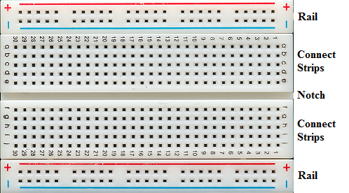
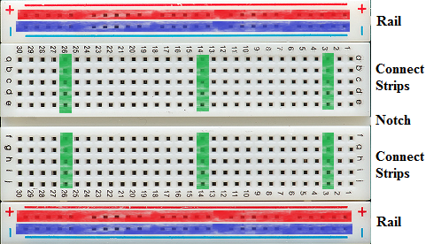

When it comes to building circuits in real life, pinching and holding wires together with your fingers as we did in the YOUR FIRST CIRCUIT project isn't very practical.
When building electronics in real life, we often want to first build temporary circuits that are easy to modify -- this lets you "play around" with the circuit and work out the kinks in your design; then, once you have a temporary circuit that is working exactly the way you want, you can use the design as the basis for creating a permanent circuit.
One of the most common ways of building a temporary circuit involves the use of a “breadboard.” The name breadboard stems from the fact that early electronics hobbyists would often use the large wooden boards designed for rolling out and cutting bread dough to house their temporary circuits.
The breadboards used
to build electronics are often called “solderless” breadboards,
which can help avoid confusion when talking to your pastry chef
friends. ☺
Breadboards come in many shapes and sizes, but the fundamental components of the breadboard will remain the same:

We’ll get to the purpose of each of these parts in a moment, but the key to a breadboard’s usefulness is how the various areas are electrically connected. Those connections are illustrated here:

As you can see, each of the two rails consists of two long row of connections (a red row in each rail and a blue row in each rail). There are spaces between the groups of holes in the rail, but the entire row is still electrically connected as indicated. Also note that the two red rows are not connected and the two blue rows are not connected – they are denoted in the same color only because they serve the same purpose.
In the center of the board, each vertical column of five holes (shown highlighted in green) is electrically connected together. While we only highlighted a few columns of five-hole connected strips, in actuality, every columns of five holes is a connected strip. It’s important to note that there is no electrical connection across the notch.
If you recall from INTRODUCTION TO ELECTRONCS, in order to have a closed circuit, electricity must be able to flow from power, through the circuit, to ground. A breadboard makes it easy to wire a circuit in this fashion – the rails denote the power and ground of the circuit, while the rest of the breadboard provides space for your components and the connections between those components.
Of course, the circuits you build on your breadboard are going to require power to operate. When it comes to providing power to the breadboard (and to the circuits on them), there are lots of options.
In one of our projects, we use a little 3V lithium battery to power the breadboard. In the rest of our projects, we power the breadboard from the Raspberry Pi, which in turn gets its power from being plugged into a wall outlet. Alternatively, if you ever use a breadboard outside of the RaspberrySTEM CREATOR Kit, you'll find that there are power supplies built specifically for breadboards. And you always have the option of finding your own power source (battery, solar cell, AC power adapter, etc) and hooking that up to your breadboard as well.